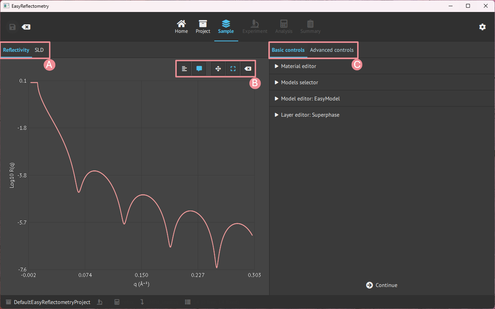
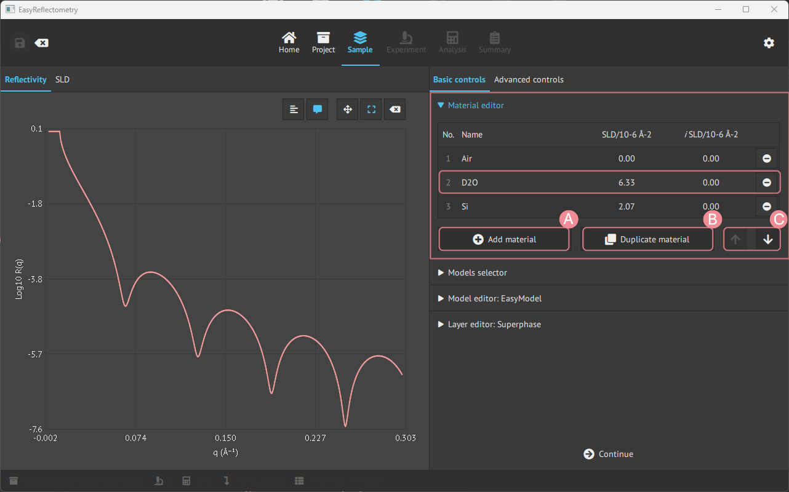
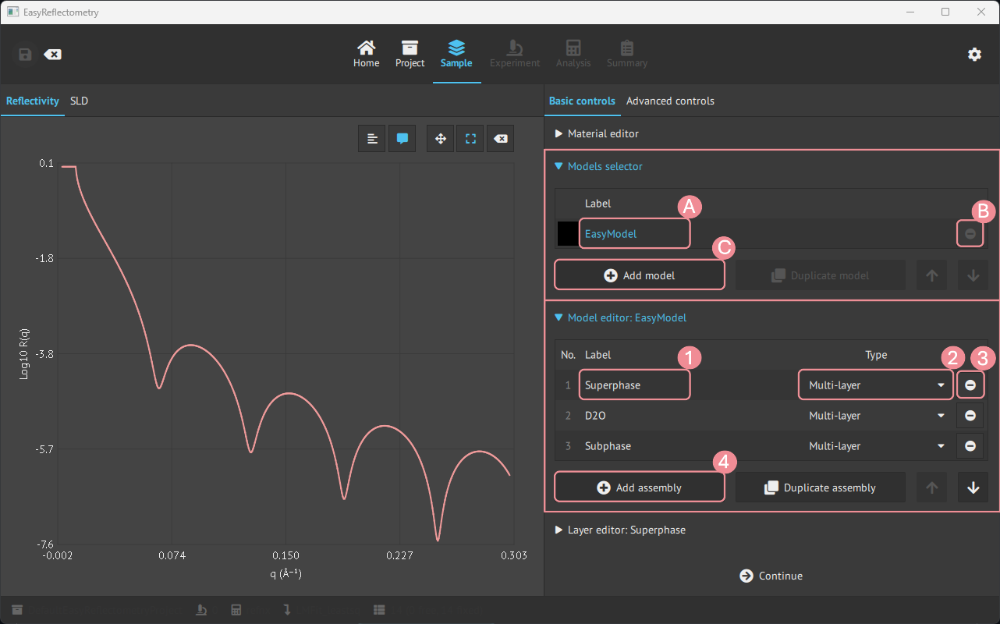
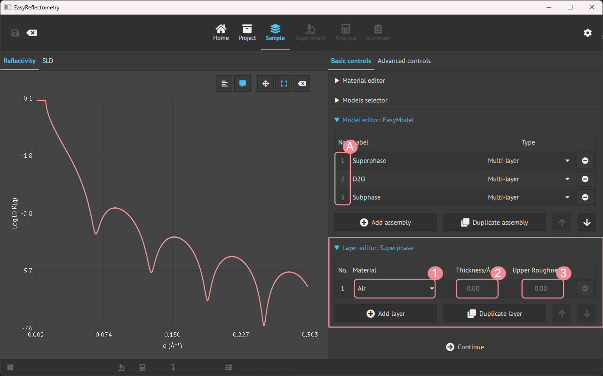
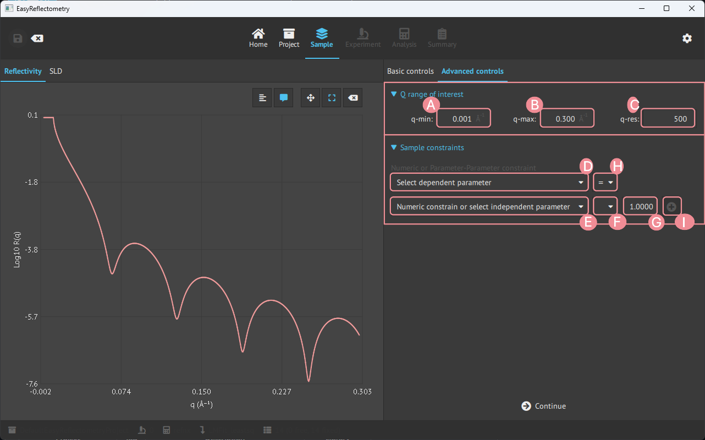

Material and model setup#
When a project is initialised it is then possible to define material and set the model.
Let us first look at the general layout of the Model page, which is split up into two parts, the main window showing the graphs and the sidebar being the control panel for variables and data.

A: Graph change between the Reflectivity- and Scattering Length Density (SLD) curve.
B: Graph control of ledger, visible coordinates on hower, zoom and pan control, and reset.
C: Basic controls, for defining material and model, and advanced controls for further setting parameters.
Basic controls#
Material editor#
To construct a model in the app, first, you add the materials that will compose the layers in Material Editor.
The materials are added by the real and imaginary components of the scattering length density (in units of 10-6Å-2) and given a name for the material.

A: For adding more material.
B: Duplicating the last clicked material.
C: Changes the ordering of materials.
Model creation and editing#
For creating new models, the Models selector tab is used, and then for setting the assemblies in the model the Model editor is used.

A: Renaming model.
B: Removing the specific model.
C: Adding more models.
1: Renaming/naming the assembly.
2: Setting the type of assembly; Multilayer, Repeating Multilayer or Surfactant layer.
3: Removing the specific assembly.
4: Adding more asseblies.
Layer editor#
Then for editing the assemblies in the model, the Layer editor is used.
By clicking an assembly, the Layer editor is specified and changes can be made to that assembly.

A: Pick the desired assembly to modify.
1: Choose a material from materials in the
Material Editor.2+3: Setting the Thickness and Upper Roughness of the material in Angstrom, Å.
Advanced controls#
In the advanced controls, it is possible to apply a specific Q-range of interest and sample constraints on the model.

A: Setting min. Q value of interest.
B: Setting max. Q value of interest.
C: Setting Q-resolution.
D: Set 1. dependent parameter.
E: Set 2. dependent parameter.
F: Set the mathematical operator (+,-,*,/) for G to apply to E.
G: Numeric value to apply to F.
H: Set the comparison operators (=,<,>) between D and E.
I: Apply the sample constraint to the model.